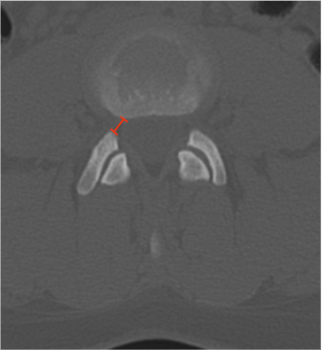

Adapted from: Feger J, Campos A, Murphy A, et al. CT lumbar spine (protocol). Reference article, Radiopaedia.org (Accessed on 03 Jan 2026) https://doi.org/10.53347/rID-90041
1) Description of Measurement
Lumbar lateral recess depth (or width) quantifies the available osseous space for the traversing nerve root between the pedicle medially and the superior articular facet laterally/posteriorly. Narrowing of this region is a common cause of radicular pain and may occur even when central canal dimensions appear normal.
This CT-based measurement reflects bony encroachment from facet hypertrophy, osteophytes, or congenital narrowing.
2) Instructions to Measure
3) Normal vs. Pathologic Ranges
Key point:
Values < 3 mm strongly correlate with symptomatic nerve root compression.
4) Important Reference
Munakomi S, Cruz R. Lumbar Spinal Stenosis. 2024 Jan 30. In: StatPearls [Internet]. Treasure Island (FL): StatPearls Publishing; 2025 Jan–.
Schonstrom NS, Bolender NF, Spengler DM. The pathomorphology of spinal stenosis as seen on CT scans of the lumbar spine. Spine (Phila Pa 1976). 1985 Nov;10(9):806-11. doi: 10.1097/00007632-198511000-00005.
Li KY, Weng JJ, Li HL, et al. Development of a Deep-Learning Model for Diagnosing Lumbar Spinal Stenosis Based on CT Images. Spine (Phila Pa 1976). 2024 Jun 15;49(12):884-891. doi: 10.1097/BRS.0000000000004903.
5) Other info....
CT-based lateral recess measurements emphasize bony pathology; correlate with MRI for ligamentous and disc-related compression.
Should be interpreted together with: